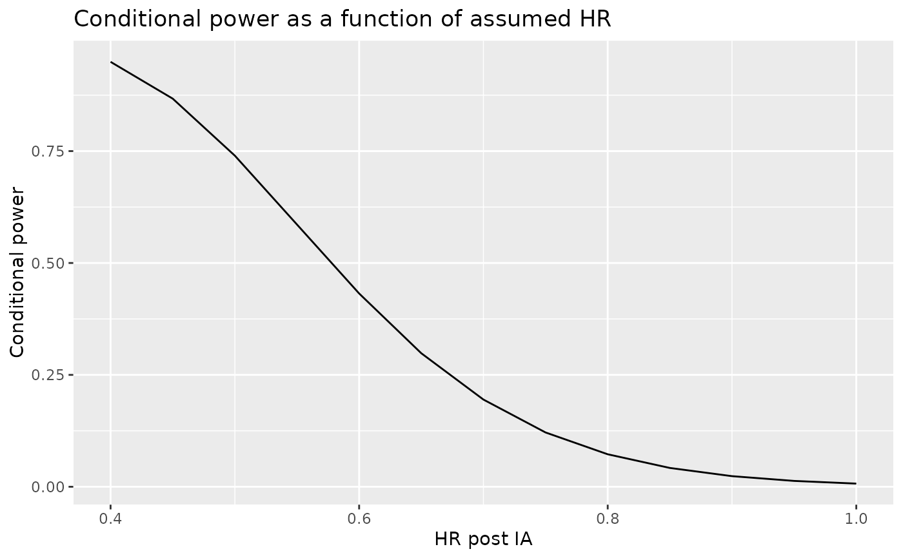
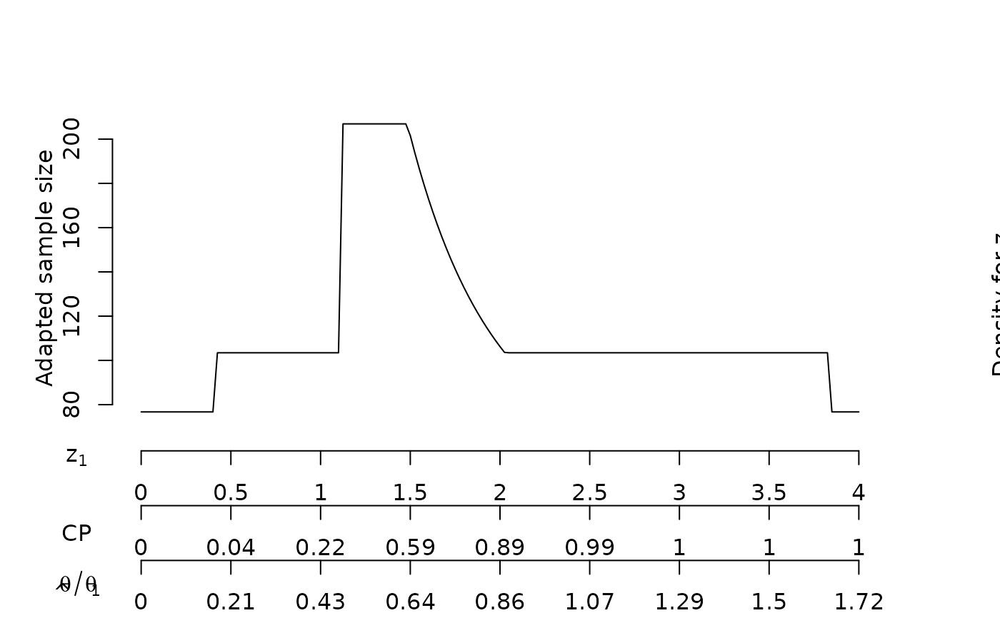
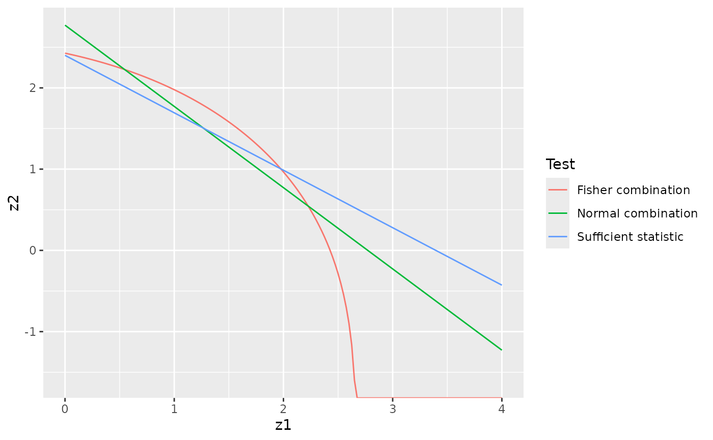
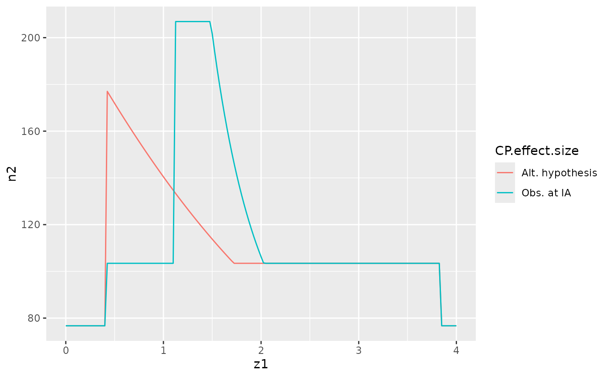
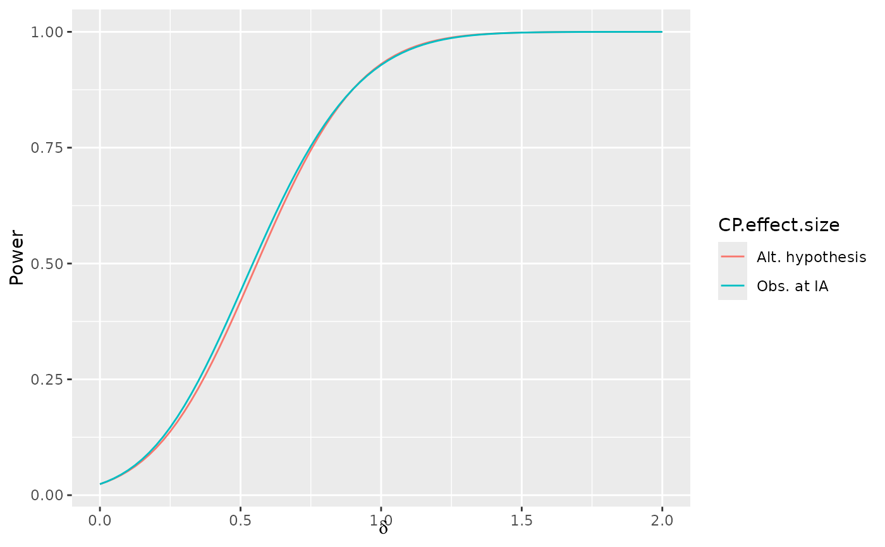

Sample size re-estimation based on conditional power
ssrCP.RdssrCP() adapts 2-stage group sequential designs to 2-stage sample
size re-estimation designs based on interim analysis conditional power. This
is a simple case of designs developed by Lehmacher and Wassmer, Biometrics
(1999). The conditional power designs of Bauer and Kohne (1994),
Proschan and Hunsberger (1995), Cui, Hung and Wang (1999) and Liu and Chi (2001),
Gao, Ware and Mehta (2008), and Mehta and Pocock (2011). Either the estimated
treatment effect at the interim analysis or any chosen effect size can be
used for sample size re-estimation. If not done carefully, these designs can
be very inefficient. It is probably a good idea to compare any design to a
simpler group sequential design; see, for example, Jennison and Turnbull
(2003). The a assumes a small Type I error is included with the interim
analysis and that the design is an adaptation from a 2-stage group
sequential design Related functions include 3 pre-defined combination test
functions (z2NC, z2Z, z2Fisher) that represent the
inverse normal combination test (Lehmacher and Wassmer, 1999), the
sufficient statistic for the complete data, and Fisher's combination test.
Power.ssrCP computes unconditional power for a conditional power
design derived by ssrCP.
condPower is a supportive routine that also is interesting in its own
right; it computes conditional power of a combination test given an interim
test statistic, stage 2 sample size and combination test statistic. While
the returned data frame should make general plotting easy, the function
plot.ssrCP() prints a plot of study sample size by stage 1 outcome
with multiple x-axis labels for stage 1 z-value, conditional power, and
stage 1 effect size relative to the effect size for which the underlying
group sequential design was powered.
Sample size re-estimation using conditional power and an interim estimate of treatment effect was proposed by several authors in the 1990's (see references below). Statistical testing for these original methods was based on combination tests since Type I error could be inflated by using a sufficient statistic for testing at the end of the trial. Since 2000, more efficient variations of these conditional power designs have been developed. Fully optimized designs have also been derived (Posch et all, 2003, Lokhnygina and Tsiatis, 2008). Some of the later conditional power methods allow use of sufficient statistics for testing (Chen, DeMets and Lan, 2004, Gao, Ware and Mehta, 2008, and Mehta and Pocock, 2011).
The methods considered here are extensions of 2-stage group sequential
designs that include both an efficacy and a futility bound at the planned
interim analysis. A maximum fold-increase in sample size (maxinc)from
the supplied group sequential design (x) is specified by the user, as
well as a range of conditional power (cpadj) where sample size should
be re-estimated at the interim analysis, 1-the targeted conditional power to
be used for sample size re-estimation (beta) and a combination test
statistic (z2) to be used for testing at the end of the trial. The
input value overrun represents incremental enrollment not included in
the interim analysis that is not included in the analysis; this is used for
calculating the required number of patients enrolled to complete the trial.
Whereas most of the methods proposed have been based on using the interim
estimated treatment effect size (default for ssrCP), the variable
theta allows the user to specify an alternative; Liu and Chi (2001)
suggest that using the parameter value for which the trial was originally
powered is a good choice.
condPower( z1, n2, z2 = z2NC, theta = NULL, x = gsDesign(k = 2, timing = 0.5, beta = beta), ... ) ssrCP( z1, theta = NULL, maxinc = 2, overrun = 0, beta = x$beta, cpadj = c(0.5, 1 - beta), x = gsDesign(k = 2, timing = 0.5), z2 = z2NC, ... ) # S3 method for ssrCP plot( x, z1ticks = NULL, mar = c(7, 4, 4, 4) + 0.1, ylab = "Adapted sample size", xlaboffset = -0.2, lty = 1, col = 1, ... ) z2NC(z1, x, ...) z2Z(z1, x, n2 = x$n.I[2] - x$n.I[1], ...) z2Fisher(z1, x, ...) Power.ssrCP(x, theta = NULL, delta = NULL, r = 18)
Arguments
| z1 | Scalar or vector with interim standardized Z-value(s). Input of multiple values makes it easy to plot the revised sample size as a function of the interim test statistic. |
|---|---|
| n2 | stage 2 sample size to be used in computing sufficient statistic when combining stage 1 and 2 test statistics. |
| z2 | a combination function that returns a test statistic cutoff for
the stage 2 test based in the interim test statistic supplied in |
| theta | If |
| x | A group sequential design with 2 stages ( |
| ... | Allows passing of arguments that may be needed by the
user-supplied function, codez2. In the case of |
| maxinc | Maximum fold-increase from planned maximum sample size in
underlying group sequential design provided in |
| overrun | The number of patients enrolled before the interim analysis is completed who are not included in the interim analysis. |
| beta | Targeted Type II error (1 - targeted conditional power); used for conditional power in sample size reestimation. |
| cpadj | Range of values strictly between 0 and 1 specifying the range
of interim conditional power for which sample size re-estimation is to be
performed. Outside of this range, the sample size supplied in |
| z1ticks | Test statistic values at which tick marks are to be made on
x-axis; automatically calculated under default of |
| mar | Plot margins; see help for |
| ylab | y-axis label |
| xlaboffset | offset on x-axis for printing x-axis labels |
| lty | line type for stage 2 sample size |
| col | line color for stage 2 sample size |
| delta | Natural parameter values for power calculation; see
|
| r | Integer value controlling grid for numerical integration as in
Jennison and Turnbull (2000); default is 18, range is 1 to 80. Larger
values provide larger number of grid points and greater accuracy. Normally
|
Value
ssrCP returns a list with the following items:
As input.
As input in z2.
standardize effect
size used for conditional power; if NULL is input, this is computed
as z1/sqrt(n1) where n1 is the stage 1 sample size.
As input.
As input.
As input.
As input.
A data frame containing the input
z1 values, computed cutoffs for the standard normal test statistic
based solely on stage 2 data (z2), stage 2 sample sizes (n2),
stage 2 conditional power (CP), standardize effect size used for
conditional power calculation (theta), and the natural parameter
value corresponding to theta (delta). The relation between
theta and delta is determined by the delta0 and
delta1 values from x: delta = delta0 +
theta(delta1-delta0).
References
Bauer, Peter and Kohne, F., Evaluation of experiments with adaptive interim analyses, Biometrics, 50:1029-1041, 1994.
Chen, YHJ, DeMets, DL and Lan, KKG. Increasing the sample size when the unblinded interim result is promising, Statistics in Medicine, 23:1023-1038, 2004.
Gao, P, Ware, JH and Mehta, C, Sample size re-estimation for adaptive sequential design in clinical trials, Journal of Biopharmaceutical Statistics", 18:1184-1196, 2008.
Jennison, C and Turnbull, BW. Mid-course sample size modification in clinical trials based on the observed treatment effect. Statistics in Medicine, 22:971-993", 2003.
Lehmacher, W and Wassmer, G. Adaptive sample size calculations in group sequential trials, Biometrics, 55:1286-1290, 1999.
Liu, Q and Chi, GY., On sample size and inference for two-stage adaptive designs, Biometrics, 57:172-177, 2001.
Mehta, C and Pocock, S. Adaptive increase in sample size when interim results are promising: A practical guide with examples, Statistics in Medicine, 30:3267-3284, 2011.
See also
Author
Keaven Anderson keaven_anderson@merck.
Examples
library(ggplot2) # quick trick for simple conditional power based on interim z-value, stage 1 and 2 sample size # assumed treatment effect and final alpha level # and observed treatment effect alpha <- .01 # set final nominal significance level timing <- .6 # set proportion of sample size, events or statistical information at IA n2 <- 40 # set stage 2 sample size events or statistical information hr <- .6 # for this example we will derive conditional power based on hazard ratios n.fix <- nEvents(hr=hr,alpha=alpha) # you could otherwise make n.fix an arbitrary positive value # this just derives a group sequential design that should not change sample size from n.fix # due to stringent IA bound x <- gsDesign(k=2,n.fix=n.fix,alpha=alpha,test.type=1,sfu=sfHSD, sfupar=-20,timing=timing,delta1=log(hr)) # derive effect sizes for which you wish to compute conditional power hrpostIA = seq(.4,1,.05) # in the following, we convert HR into standardized effect size based on the design in x powr <- condPower(x=x,z1=1,n2=x$n.I[2]-x$n.I[1],theta=log(hrpostIA)/x$delta1*x$theta[2]) qplot(hrpostIA,condPower(x=x,z1=1,n2=x$n.I[2]-x$n.I[1],theta=log(hrpostIA)/x$delta1*x$theta[2]), geom="line",xlab="HR post IA",ylab="Conditional power", main ="Conditional power as a function of assumed HR")# Following is a template for entering parameters for ssrCP # Natural parameter value null and alternate hypothesis values delta0 <- 0 delta1 <- 1 # timing of interim analysis for underlying group sequential design timing <- .5 # upper spending function sfu <- sfHSD # upper spending function paramater sfupar <- -12 # maximum sample size inflation maxinflation <- 2 # assumed enrollment overrrun at IA overrun <- 25 # interim z-values for plotting z <- seq(0, 4, .025) # Type I error (1-sided) alpha <- .025 # Type II error for design beta <- .1 # Fixed design sample size n.fix <- 100 # conditional power interval where sample # size is to be adjusted cpadj <- c(.3, .9) # targeted Type II error when adapting sample size betastar <- beta # combination test (built-in options are: z2Z, z2NC, z2Fisher) z2 <- z2NC # use the above parameters to generate design # generate a 2-stage group sequential design with x <- gsDesign( k = 2, n.fix = n.fix, timing = timing, sfu = sfu, sfupar = sfupar, alpha = alpha, beta = beta, delta0 = delta0, delta1 = delta1 ) # extend this to a conditional power design xx <- ssrCP( x = x, z1 = z, overrun = overrun, beta = betastar, cpadj = cpadj, maxinc = maxinflation, z2 = z2 ) # plot the stage 2 sample size plot(xx)# demonstrate overlays on this plot # overlay with densities for z1 under different hypotheses lines(z, 80 + 240 * dnorm(z, mean = 0), col = 2)text(x = 1.00, y = 180, col = 4, labels = expression(paste("Density for ", theta, "=", theta[1], "/2")))text(x = 2.5, y = 140, col = 5, labels = expression(paste("Density for ", theta, "=", theta[1], "*.75")))# overall line for max sample size nalt <- xx$maxinc * x$n.I[2] lines(x = par("usr")[1:2], y = c(nalt, nalt), lty = 2)# compare above design with different combination tests # use sufficient statistic for final testing xxZ <- ssrCP( x = x, z1 = z, overrun = overrun, beta = betastar, cpadj = cpadj, maxinc = maxinflation, z2 = z2Z ) # use Fisher combination test for final testing xxFisher <- ssrCP( x = x, z1 = z, overrun = overrun, beta = betastar, cpadj = cpadj, maxinc = maxinflation, z2 = z2Fisher ) # combine data frames from these designs y <- rbind( data.frame(cbind(xx$dat, Test = "Normal combination")), data.frame(cbind(xxZ$dat, Test = "Sufficient statistic")), data.frame(cbind(xxFisher$dat, Test = "Fisher combination")) ) # plot stage 2 statistic required for positive combination test ggplot2::ggplot(data = y, ggplot2::aes(x = z1, y = z2, col = Test)) + ggplot2::geom_line()# plot total sample size versus stage 1 test statistic ggplot2::ggplot(data = y, ggplot2::aes(x = z1, y = n2, col = Test)) + ggplot2::geom_line()#> theta delta Power en #> 1 0 0 0.0220804 95.11565# compare designs using observed vs planned theta for conditional power xxtheta1 <- ssrCP( x = x, z1 = z, overrun = overrun, beta = betastar, cpadj = cpadj, maxinc = maxinflation, z2 = z2, theta = x$delta ) # combine data frames for the 2 designs y <- rbind( data.frame(cbind(xx$dat, "CP effect size" = "Obs. at IA")), data.frame(cbind(xxtheta1$dat, "CP effect size" = "Alt. hypothesis")) ) # plot stage 2 sample size by design ggplot2::ggplot(data = y, ggplot2::aes(x = z1, y = n2, col = CP.effect.size)) + ggplot2::geom_line()# compare power and expected sample size y1 <- Power.ssrCP(x = xx) y2 <- Power.ssrCP(x = xxtheta1) # combine data frames for the 2 designs y3 <- rbind( data.frame(cbind(y1, "CP effect size" = "Obs. at IA")), data.frame(cbind(y2, "CP effect size" = "Alt. hypothesis")) ) # plot expected sample size by design and effect size ggplot2::ggplot(data = y3, ggplot2::aes(x = delta, y = en, col = CP.effect.size)) + ggplot2::geom_line() + ggplot2::xlab(expression(delta)) + ggplot2::ylab("Expected sample size")# plot power by design and effect size ggplot2::ggplot(data = y3, ggplot2::aes(x = delta, y = Power, col = CP.effect.size)) + ggplot2::geom_line() + ggplot2::xlab(expression(delta))